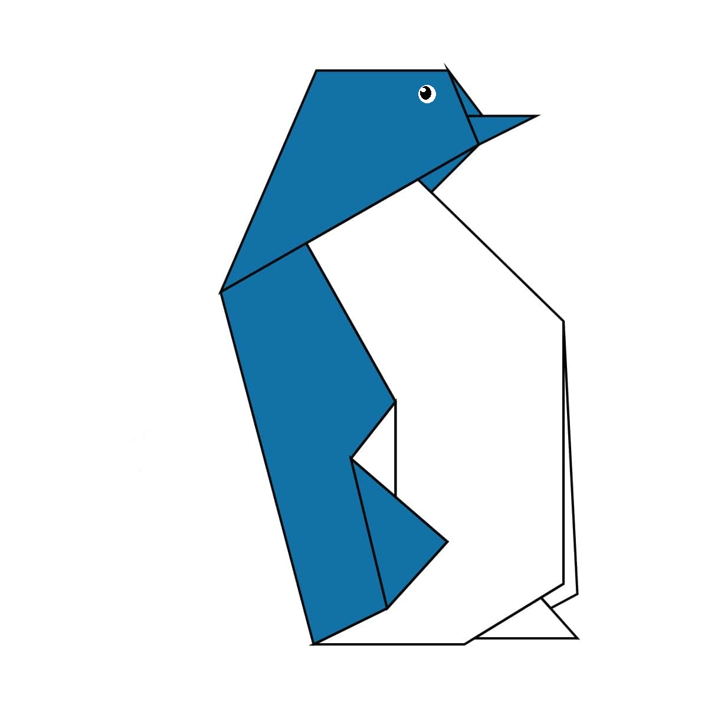

Pigeon
Interesting Facts about Pigeons
- Pigeons are incredibly complex and intelligent animals
- Pigeons are renowned for their outstanding navigational abilities
- Pigeons have excellent hearing abilities

Chameleon
Interesting Facts about Chameleons
- Chameleons are reptiles that are a part of the iguana suborder
- Changing colour is an important part of communication among chameleons
- Most chameleons have a prehensile tail that they use to wrap around tree branches
Lion
Interesting Facts about Lions
- The lion is a species in the family Felidae and a member of the genus Panthera
- Female Lions Do Most of the Hunting, While Males Are Responsible for Protecting the Pride
- Lions Do Not Need to Drink Everyday, But They Do Need to Eat

Penguin
Penguin
Interesting Facts about Penguins
- Penguins are flightless birds
- Most penguins live in the Southern Hemisphere
- Penguins have adapted flippers to help them swim in the water